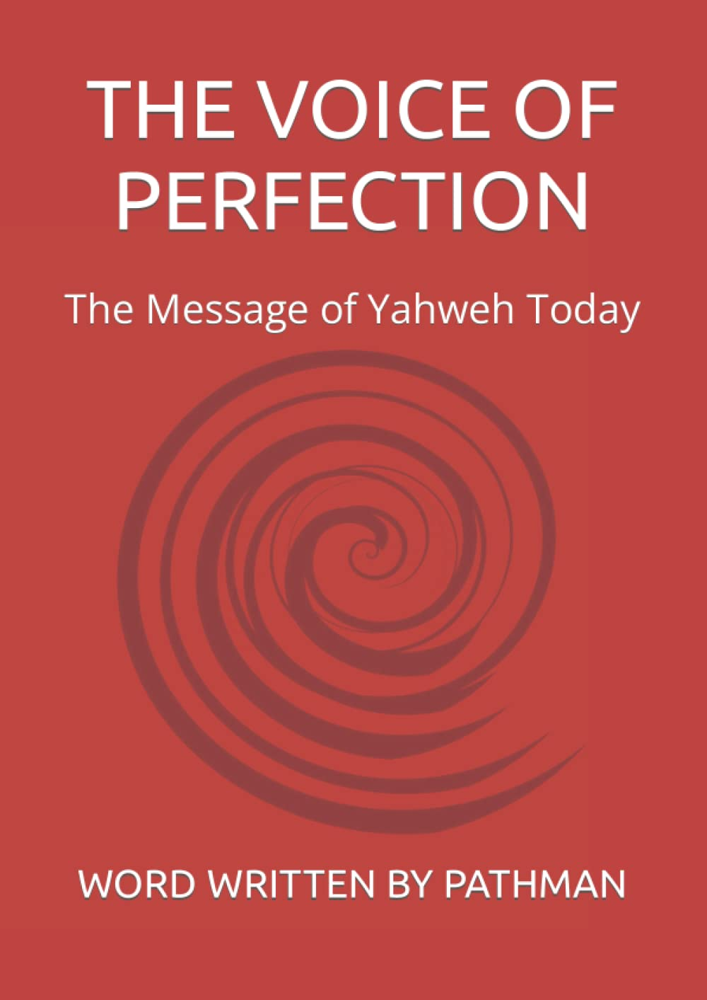

Book Overview
See all formats and editions
The world today is in crises. These are the days of
mourning. More than ever the world is bedeviled with
intractable problems. Humankind is in search of solutions
to her seemingly insurmountable problems. Men are
yearning for the return of a Saviour. Believers of
different congregations and faiths are groaning in
utter and palpable grief, praying for a consolation
in a world beset with horrific and terrifying
circumstances. We are in a difficult season and this
period is crucial because Yahweh is separating the
just from the unjust. While the prevailing conditions
may continue to appear inexplicable to many, even
some who consider themselves religious will be
shaken. Is there any hope for this state of
hopelessness and misery in the world? Today,
The Voice of Perfection is Revealed. It is the
word of the good shepherd. This written word
gives life. It offers a solution to all who
understand the times and season. The Earth is hot.
Many lives have being turned upside down s
piritually. There is weeping and wailing and
gnashing of teeth. So many desire a relief from
the cooling waters of life. That is why the
message Revealed in The Voice of Perfection is
timely. Here a sheep of the good shepherd comes
to the brethren unannounced with the revelation
and word of Yahweh proclaiming the sole
authority of the Master Jesus, who is
Yahoshea. Today the Messiah speaks again
in fulfilment of scripture in John 10:16.
The word today is provable. When we practice
living by the word. Yahweh puts an end to
this day of
mourning, bringing healing to our minds and bodies.
Book series



About author
This record is a true literature of life. This great story of life is centred on Yahweh and Yahoshea (Jesus). The servant of Yahweh in The Message of Yahweh Today comes to you unannounced. He is hopeful of what the future holds for the flock of Yahweh (The third flock). The Messiah Yahoshea (Christ Jesus) works, even as Yahweh continues to work in the midst of His people in the world to bring into fulfillment His plans for the sheep fold. The servant of Yahweh, the Pathman, hears THE VOICE OF PERFECTION. This voice – THE VOICE OF PERFECTION will speak to all men in righteousness. It is for this reason, that The Message of Yahweh Today is proclaimed from one nation to the other. This is the commission; I have received from Yahweh to deliver the light and form of Yahweh to the peoples of the world. This is just the beginning. This revelation - Word Written by Pathman is provable by all those who seek after righteousness. The proof of every true word, is the power of its word to save, purify and transform lives. Opening up the eyes of the blind, ears of the deaf and conferring everlasting peace to all who belong to this flock. What story, will I tell the world about this servant and what would I consider an achievement. Nothing in the world deserves glory or glorification. Yahweh has prepared the servant for a mission to live by His word and proclaim His word, so that all men can partake in Yahweh’s great feast of righteousness. I have achieved nothing outside His will. We can only consider ourselves, achievers once Yahweh’s peace abides in us. Like I mentioned earlier. This story is not about a man. It is about Yahweh and Yahoshea (Jesus) and about the flock today, for which we are all brethren under the leadership of the good shepherd. Blessed be the name of Yahweh.